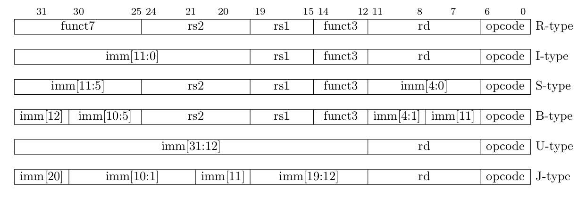
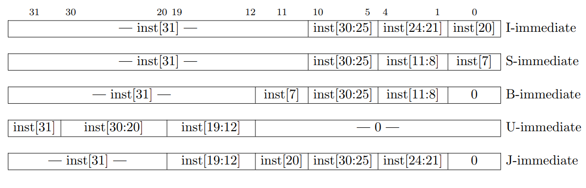
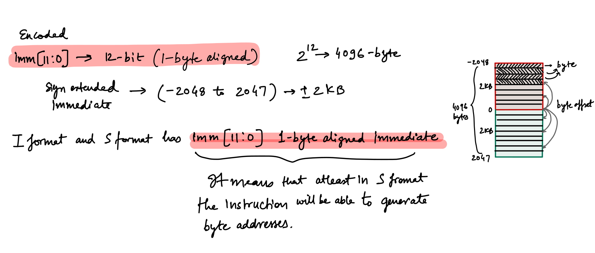
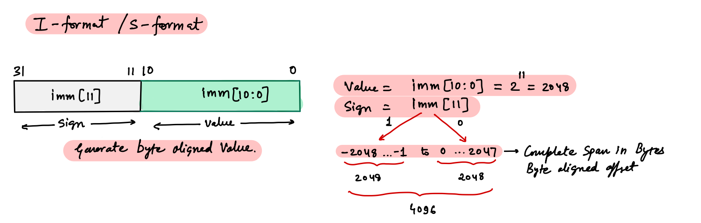
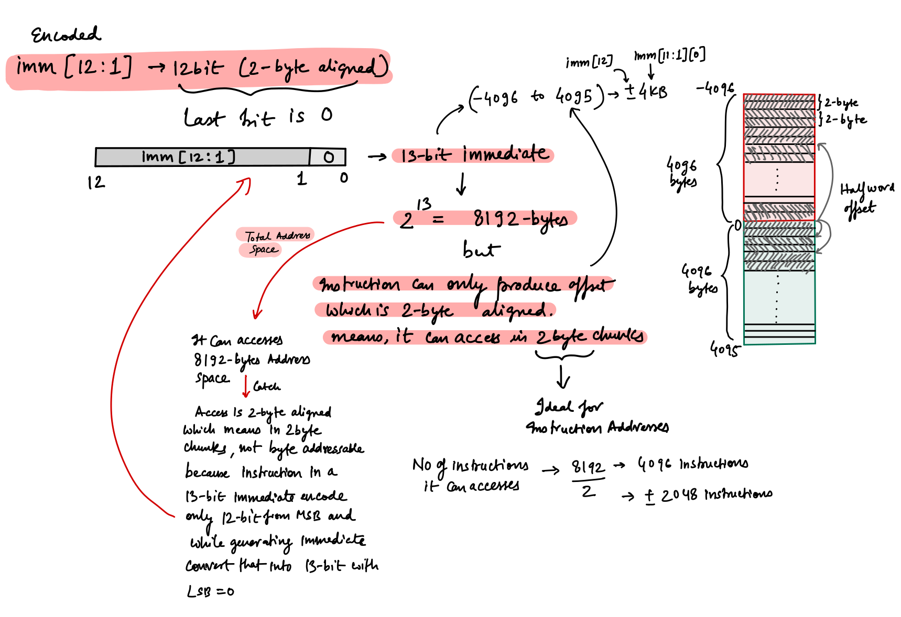
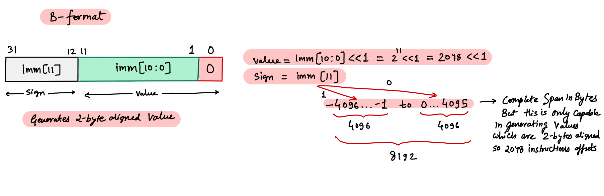
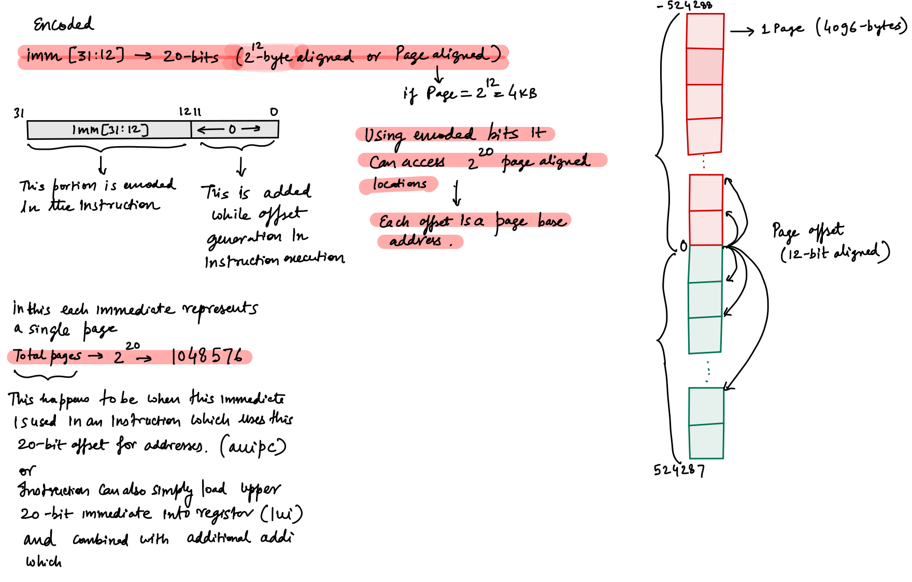
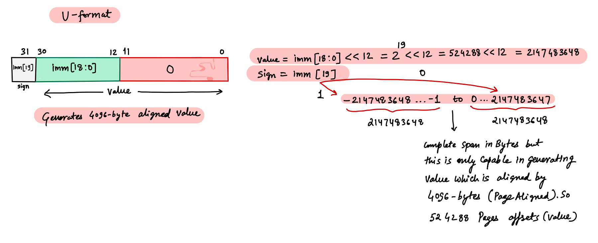
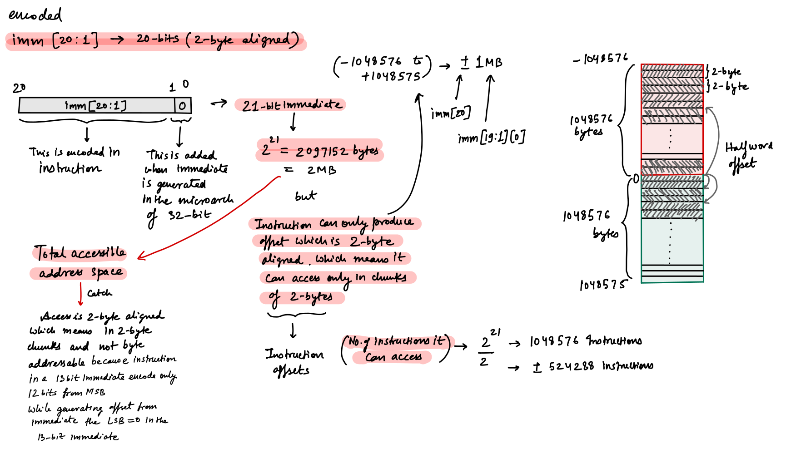
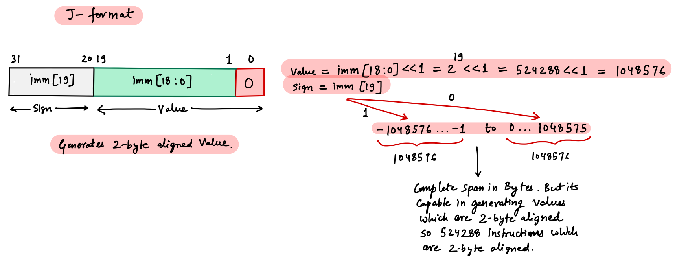

RISC-V Instruction Immediates - Notes
RISC-V ISA has efficient instructions encodings which are devised to reduce the hardware complexity. Important portion of instruction encoding includes immediates which are sign-extended and packed towards the leftmost available bits in the instruction. To make immediate encoding efficient the sign-bit for all immediates in all applicable formats is always 31st bit in the 32-bit instruction.
Assembler encodes the numbers in instructions as per the ISA when code is assembled. When code is executed those encodings are converted into 32-bit immediate values by the CPU which are then used to generate the addresses/offsets/numbers according to the executed instruction.
1 - Immediate encoding in instruction formats

Immediates encoding in instruction formats
2 - Immediates generated by CPU from encoding

image arch
3 - imm[11:0] → 12-bit (1-byte aligned)
Both I-type and S-type formats this 12-bit immediate which are encoded in the instruction differently in both formats.
 
4 - imm[12:1] → 12-bit (2-byte aligned)
Used in B-type format
 
5 - imm[31:12] → 20-bit (4096-byte aligned)
Used in U-type format. If page size is of 4096-byte we can say that this generated immediate is page aligned.
 
6 - imm[20:1] → 20-bit (2-byte aligned)
Used in J-type format.
 